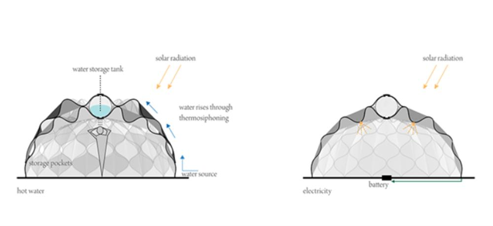
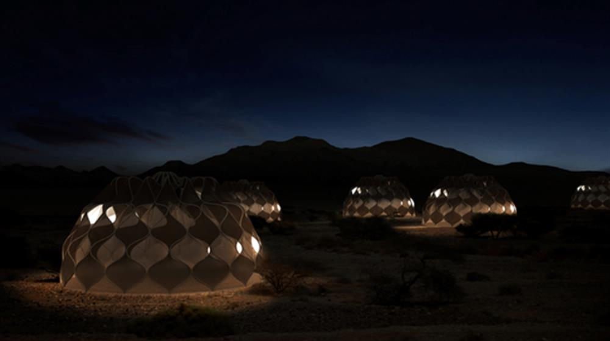

SOURCE: ABEER SEIKALY
LEXUS DESIGN AWARD
Structural Fabric Weaves Tent Shelters into Communities
Human life throughout history has developed in alternating waves of migration and settlement. The movement of people across the earth led to the discovery of new territories as well as the creation of new communities among strangers forming towns, cities, and nations. Navigating this duality between exploration and settlement, movement and stillness is a fundamental essence of what it means to be human.
In the aftermath of global wars and natural disasters, the world has witnessed the displacement of millions of people across continents. Refugees seeking shelter from disasters carry from their homes what they can and resettle in unknown lands, often starting with nothing but a tent to call home. “Weaving a home” reexamines the traditional architectural concept of tent shelters by creating a technical, structural fabric that expands to enclose and contracts for mobility while providing the comforts of contemporary life (heat, running water, electricity, storage, etc.)

Design is supposed to give form to a gap in people’s needs. This lightweight, mobile, structural fabric could potentially close the gap between need and desire as people metaphorically weave their lives back together, physically weaving their built environment into a place both new and familiar, transient and rooted, private and connected. In this space, the refugees find a place to pause from their turbulent worlds, a place to weave the tapestry of their new lives. They weave their shelter into home.

SOURCE: ABEER SEIKALY
ORIGINAL LEAD: ONE MILLION WOMEN